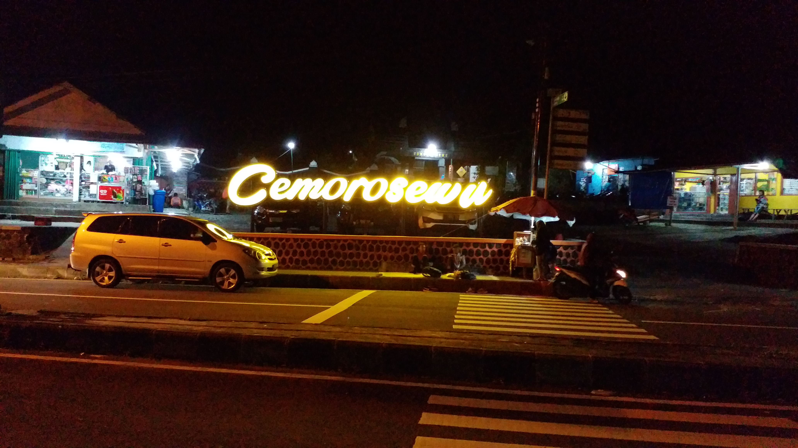

SEJARAH
Dalam kehidupan social budaya, ternyata melalui tulisannya banyak para ahli sejarah menyebut-nyebut Magetan. Demikian pula dalam kenyataanya, di Magetan tidak sedikit dijumpai peninggalan-peninggalan pada jaman dahulu kala, misalnya di desa Kepolorejo Kecamatan Kota Magetan, di desa Cepoko Kecamatan Panekan. Di makam Sonokeling desa Kepolorejo Kecamatan Kota Magetan terdapat sebuah makam yang membujur kearah utara selatan. Batu nisan sebelah berukuran lebar 34 cm, tebal 26 cm, tinggi 66 cm yang bahannya terbuat dari batu andezit dimana bentuk tulisannya diperkirakan berasal dari sekitar abad 9. Di dukuh Sadon desa Cepoko kecamatan Panekan terdapat Kalamakara dengan reruntuhan batu lainnya yang bahannya juga dari batu andezit. Berdasarkan hal tersebut terdapat kemungkinan dipersiapkannya pendirian bangunan candi. Pada reruntuhan batu yang terletak dibawah makara terdapat tulisan yang tidak terbaca karena sudah rusak, dari bentuk tulisannya dapat diperkirakan bahwa peninggalan tersebut dari jaman Erlangga (Kediri). Reruntuhan tersebut oleh masyarakat sekitar dikenal dengan nama Dadung Awuk.
Ditempat lain juga terdapat peninggalan-peninggalan yang lain seperti di puncak gunung Lawu wilayah kabupaten Magetan yaitu peninggalan yang berbentuk Pawon Sewu (candi pawon) atau punden berundak yang diperkirakan sebagai hasil budaya jaman Majapahit. Demikia juga di lereng gunung Lawu terdapat peninggalan candi Sukuh dan candi Ceto. Adanya peninggalan-peninggalan tersebut sesuai dengan perkembangan di akhir kerajaan Majapahit, dimana waktu itu banyak rakyat dan kalangan keraton yang meninggalkan pusat kerajaan dan pergi ke gunung-gunung dalam usaha mempertahankan kebudayaan dan agama Hindu termasuk gunung Lawu kabupaten Magetan.
LETAK GEOGRAFIS
Kabupaten Magetan terletak pada posisi 7°38'30" Lintang selatan dan 111°20'30" Bujur Timur. Secara administrasi, Kabupaten Magetan terdiri dari 18 Kecamatan dengan 235 desa. Luas Kabupaten Magetan mencapai 688,85 km². Kecamatan Plaosan merupakan kecamatan terluas dengan luas 66,09 km² sedangkan Kecamatan Karangrejo dengan luas 15,15 km² merupakan kecamatan dengan luas terkecil.
Kabupaten ini berbatasan dengan Kabupaten Ngawi di utara, Kota Madiun dan Kabupaten Madiun di timur, Kabupaten Ponorogo, serta Kabupaten Karanganyar dan Kabupaten Wonogiri (keduanya termasuk provinsi Jawa Tengah). Bandar Udara Iswahjudi, salah satu pangkalan utama Angkatan Udara Republik Indonesia di Jawa Timur, terletak di kecamatan Maospati.Kabupaten Magetan dilintasi jalan raya utama Surabaya-Madiun-Yogyakarta dan jalur kereta api lintas selatan Pulau Jawa, namun jalur tersebut tidak melintasi ibu kota Kabupaten Magetan. Satu-satunya stasiun yang berada di wilayah kabupaten Magetan adalah Stasiun Magetan yang terletak di wilayah Kecamatan Barat.Gunung Lawu (3.265 m) terdapat di bagian barat Kabupaten Magetan, yakni perbatasan dengan Jawa Tengah.
WISATA
Kabupaten Magetan sendiri juga mempunyai berbagai tempat wisata yang tidak kalah menarik, beberapa tempat wisata yang ada di Kabupaten Magetan adalah sebagai berikut
TELAGA SARANGAN
Wisata populer yang ada di Magetan salah satunya adalah Telaga Sarangan. Telaga ini memiliki udara sekitar yang sejuk dengan pemandangan alam yang indah. Sebagai salah satu ikon wisata yang ada di Magetan, Anda bisa menemukan banyak fasilitas yang cukup lengkap untuk para pengunjung.
Anda bisa berkeliling telaga menggunakan perahu, naik kuda atau hanya sekadar jalan-jalan. Bisa juga menikmati kuliner khas setempat yang ada di Desa Sarangan, Kecamatan Plaosan.
MOJOSEMI FOREST PARK
Namanya adalah Mojosemi Forest Park yang merupakan wisata di sebelah selatan Telaga Sarangan. Destinasi ini menawarkan sensasi liburan seru dan lengkap. Apalagi dengan lingkungan alam yang masih cukup asri Anda akan menikmati pemandangan luar biasa menakjubkan.Mojosemi ini berada di Jalan Raya Telaga Sarangan, Kecamatan Plaosan. Ada beberapa wahana seperti flying fox, high rope, adventure, lawu tour dan lain sebagainya. Siapkan budget lebih jika ingin menikmati beberapa wahana yang disediakan di lokasi wisata.
CEMORO SEWU

Menapakkan kaki di Magetan tidak pernah lengkap jika belum mengunjungi Cemoro Sewu. Destinasi wisata alam ini sebenarnya pintu masuk para pendaki yang hendak pergi menuju Gunung Lawu. Sesampainya di kawasan wisata, terlihat pepohonan cemara tampak menyapa para wisatawan di sepanjang perjalanan.
KULINER
bagi para wisatawan yang datang ke Magetan atau bagi kamu yang sedang perjalanan dan melewati Magetan. Ada informasi menarik seputar kuliner Magetan yang tidak boleh kamu lewatkan. Berikut ini daftar kuliner Magetan yang enak dan populer, beberapa bisa kamu jadikan oleh-oleh.
AYAM PANGGANG BU SETU
Ayam panggang Bu Setu Gandu, sebutan ini cukup populer oleh masyarakat Magetan. Sebenarnya di Gandu tidak hanya Bu setu saja yang menjual ayam panggang. Banyak juga penjual-penjual lain yang sama seperti di tempat bu Setu, yaitu menyediakan tempat untuk lesehan di dalam rumahnya.Di desa Gandu, kec. Karangrejo, Magetan ini adalah sentra ayam panggang yang sudah cukup ternama. Hampir setiap hari, lokasi ini selalu ramai dikunjungi. Apalagi waktu bulan puasa, jika tidak memesan tempat terlebih dahulu akan sulit untuk mendapatkan tempat untuk menikmati kuliner ayam panggang Gandu.
Ayam panggang yang disajikan ada ayam kampung asli dan ayam pedaging, disana ada bumbu spesial yang khas dengan cita rasa tersendiri. Nama ayam panggang gandu sangat populer, bahkan banyak para pejabat dan para menteri yang singgah di Magetan untuk menikmati ayam panggang Gandu bersama rombongan.
SATE KELINCI
Banyak warung-warung dipinggir jalan yang menjual sate kelinci yang disajikan dengan lontong dan bumbu pecel. Rasanya sangat enak, bumbu pecel dikombinasikan dengan kecap.Selain di tempat-tempat wisata, banyak juga di desa-desa di Magetan yang juga menjual sate kelinci, terkadang si penjual menjualnya dengan gerobak dan dijual berkeliling.
NASI PECEL
Ketika kita mendengar kata pecel, pasti yang terbayang pertama kali adalah Madiun. Yap, Madiun memang kota yang khas dengan sambel pecelnya hingga kota Madiun punya julukan kota pecel.Namun di Magetan, pecel juga menjadi makanan yang sangat khas bagi masyarakat Magetan. Hampir disetiap sudut jalan di Magetan ada yang menjual nasi pecel.Nasi pecel di Magetan tidak kalah enaknya lho dari Madiun, karena bisa dibilang Magetan dan Madiun memang satu rumpun dan satu wilayah.Nasi pecel di Magetan ada yang disajikan dengan lauk kerupuk, peyek, tempe goreng, dengan telur dan ada juga yang disajikan dengan udang, ikan lele atau ayam goreng.Harga nasi pecel di Magetan masing sangat murah, untuk nasi pecel biasa dengan lauk tempe / kerupuk umumnya dijual seharga 3000 rupiah untuk satu porsinya.